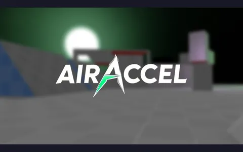
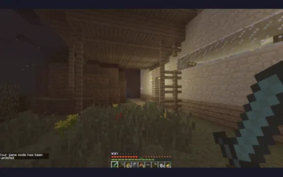
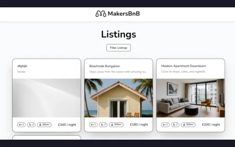
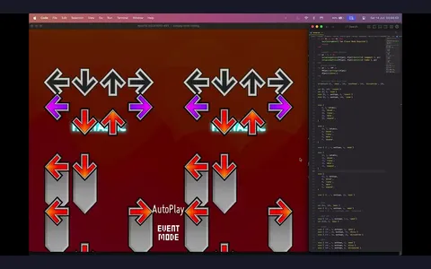
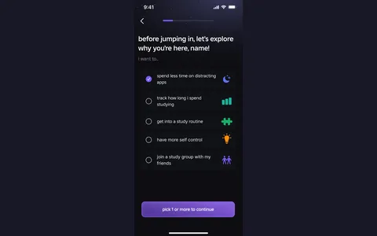
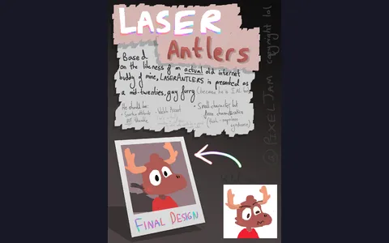

milo tek
Software engineer, 19, UK. Right now I'm a software engineering apprentice at Google in London, on the Search app for mobile. Backend and infrastructure, so google.com, basically.
The rest of the time I build games with Pixeljam Studios, run more servers than one person needs, and draw when I remember to.
Everything I've made is below, newest first.
the log
19 things, newest first. Lanes: main, games, systems, apps.
main
Software Engineer (Apprentice), Google
The Google Search app for mobile, in London. Backend and infrastructure. Yes, google.com.
games
Neosource
A modernised Source engine, roughly. Fragsurf ported onto Unity 2022.3 and URP, with the Linux editor working.
games
AIRACCEL
Bunnyhop and surf, in a browser. No server list, no install, no six hour learning cliff.

games
legacy console shaders
Shaders that make Java Minecraft look like the Xbox 360 edition. Written for 1.6.4, obviously.

apps
RoRipper
Pulling Roblox's local asset cache apart, so you can see and hear what your own client already downloaded.
games
Roxor Engine
A shared Roblox base engine: movement, weapons, downed states, inventory, UI. The 80% you rewrite every time.
systems
lakeback
Third-party matchmaking for CS2 wingman, on de_lake. Because de_lake deserves better.
apps
MakersBNB
An AirBnB clone built by six of us in a week. Flask, Postgres, Playwright, and a lot of pairing.

main
Makers, software engineering bootcamp
Straight out of sixth form: pairing, test-driven development, Python then Java and Spring. Where MakersBNB and Acebook came from.
main
A levels, Hills Road Sixth Form
Computer Science, Maths, English Literature and an EPQ, in Cambridge.
games
notITG modcharts
A small pack of StepMania modcharts. Lua for the choreography, GLSL when Lua runs out.

apps
Lockyn
A study and focus app for GCSE and sixth form students. Started as my A level NEA and outgrew it.

apps
EZcals
Calorie tracker aimed at the ten seconds after you've eaten, rather than the ten minutes before.
games
Accessible 3D platformer (EPQ)
Six months of weekends on a platformer you can still finish when your hands don't cooperate.

systems
AutoPet Feeder
An automated pet feeder built to a real client's spec. My neighbours' cat has strong opinions about uptime.
games
Roblox, on and off
The first game I properly shipped was Lua on Roblox. 15,000 unique players in three months, a number I have not beaten since.
systems
Self-hosting
Three years of running my own boxes. Started as a free VPS and a game server, ended as most of a house.